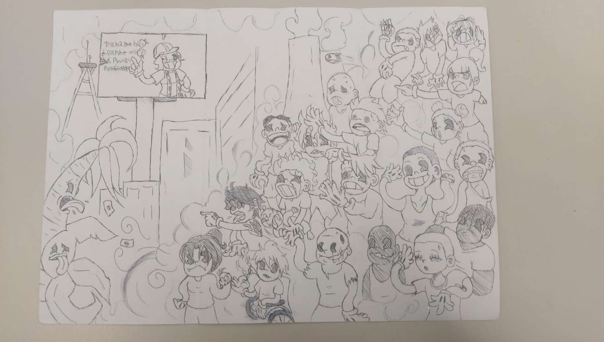
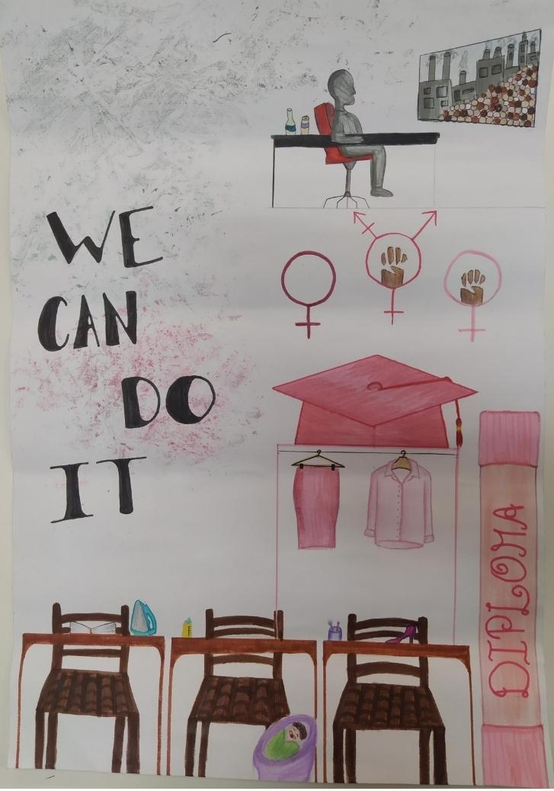

Releitura da obra "Operários", de Tarsila do Amaral
Os alunos da 1B Tarde fizeram releituras da pintura citada, a relacionando com alguma notícia sobre o contexto das minorias do mercado de trabalho atual. Segue abaixo as produções realizadas por cada um.
Autor:Charles Baltazar
"A realidade de que pessoas com deficiência sofrem, é extremamente perturbadora, são reprimidos e lidam com muitas dificuldades diárias. Dentro do mercado de trabalho, o caso é ainda pior, pois as pessoas buscam trabalhadores com grandes capacidades, mesmo que uma pessoa deficiente sejá uma grande mente genial, dentro do mercado não é isso que irão ver."clique aqui para saber mais sobre
Autora:Luisa Soares

"O trabalho de produção visual que desenvolvi foi uma charge de pessoas com Síndrome de Down tentando se ingressar no mercado de trabalho. A notícia que peguei como referência foi “Atendente de 46 anos com Síndrome de Down supera preconceito e fala de inclusão no mercado de trabalho”. No desenho realizado, há várias pessoas sérias e tristes, mas há um que está feliz (em homenagem ao entrevistado da notícia), pois ele superou esse desafio que é a inclusão e respeito no trabalho. Assim, a maneira que os personagens estão posicionados, além de uma indústria ao lado deles é o que faz a produção ser uma releitura da obra “Operários” da Tarsila do Amaral. No canto superior esquerdo há a mensagem “Conosco, não por nós”, que é um lema tirado da própria notícia escolhida para reforçar a inserção de pessoas com trissomia 21 neste contexto."clique aqui para saber mais sobre
Autora:Agnes Schmidt
"A ilustração foi pensada em como as mulheres têm que construir e percorrer um caminho muito mais longo apenas por serem mulheres. Elas frequentemente são cobradas de se vestir apropriadamente cuidar da casa e dos filhos, e se não tiverem uma boa formação, tem mais complicações na hora da contratação. A releitura além de representar tudo isso ainda mostra o chefe "homem que está no comando" olhando seus funcionárias(os) na fábrica"clique aqui para saber mais sobre